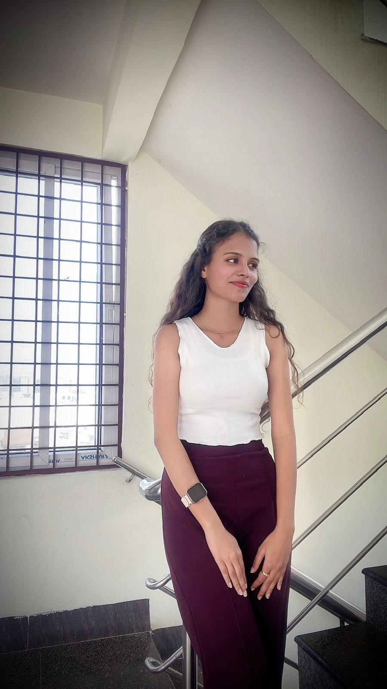

B.Tech CSE graduate specialising in SEO strategy, AI-powered automation, and technical site optimisation. Building smarter workflows with N8N, Claude AI, and data-driven SEO to drive organic growth.

I bring a developer's mindset to search optimisation — combining technical depth with creative problem-solving to make sites faster, smarter, and more visible.
I'm an SEO Analyst at BankBazaar, where I work at the intersection of search optimisation and engineering. My day-to-day is a mix of keyword research, technical audits, and building in-house tools that take repetitive SEO work off my team's plate.
What I care about most is building things that scale. Whether it's an N8N workflow that handles backlink disavow processing, or a Claude AI–powered tool for content operations, I'm always looking for the leverage point where automation can replace busywork.
I graduated B.Tech in Computer Science from JNTUA in 2024, and I'm based in Bangalore. Outside of work, I'm a trained classical dancer — discipline that translates surprisingly well to the patience SEO requires.
A toolkit built across four years of computer science training and hands-on SEO work — from Python full-stack to crawl budget optimisation.
On-page, off-page, and technical SEO — with a focus on getting search engines to understand sites better.
Replacing manual SEO ops with workflows and tools that compound time savings.
A computer science foundation that lets me read, write, and ship the code behind SEO tools.
The platforms I use daily to track, audit, and act on search performance.
Driving organic growth and operational efficiency through SEO and AI-led automation.
A mix of professional automation builds and academic projects that shaped how I think about technical problems.
Designed and built an end-to-end automation pipeline that handles backlink disavow processing — turning a multi-hour manual task into a hands-off workflow. Substantially reduced effort and turnaround time for the SEO team.
Built two internal automation tools leveraging Claude AI to assist with content operations and SEO tasks — embedding AI assistance directly into the team's daily workflow to compound time savings.
End-to-end clustering pipeline using Mini-Batch K-Means. Cleaned and feature-engineered customer data, then segmented users into actionable groups like high-value shoppers and bargain hunters — improving marketing efficiency and inventory targeting.
Audited systems for vulnerabilities, applied hardening rules, remediated issues, and ran online-safety training. Improved system safety by 30% and delivered a faster security plan with added protective layers.
EDUSKILLS
NPTEL
Brain O Vision
Long-time extracurricular practice
I'm open to opportunities in SEO, AI automation, and technical roles where engineering meets growth. Drop a message — I'd love to hear from you.